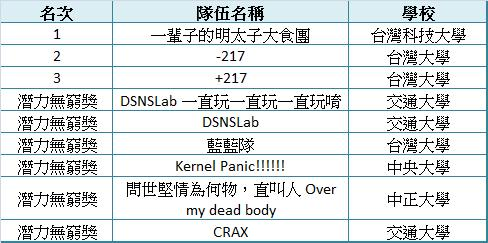
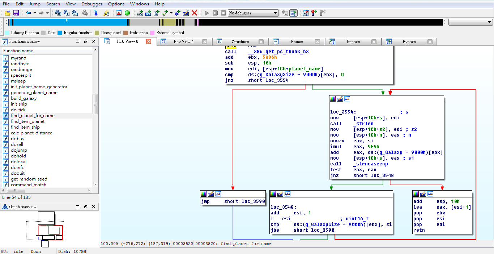

|
OSStatus err;
...
if ((err = SSLHashSHA1.update(&hashCtx, &serverRandom)) != 0)
goto fail;
if ((err = SSLHashSHA1.update(&hashCtx, &signedParams)) != 0)
goto fail;
goto fail;
if ((err = SSLHashSHA1.final(&hashCtx, &hashOut)) != 0)
goto fail;
...
fail:
SSLFreeBuffer(&signedHashes);
SSLFreeBuffer(&hashCtx);
return err;
Low address High address
callee caller
|---------------------------------|----------------------------
Buffer Canary
AAAAAAAAAAAAAAAAA .....
Stack Layout
int a; printf("%p", &a);|  |
|
 Hex-Rays IDA Pro